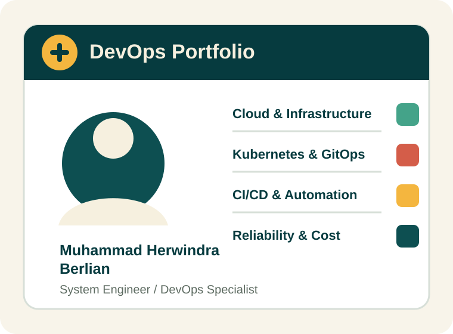

Cloud Migration
GCP to Azure migration for HubOn, legacy workload migration to GCP, and production-grade AWS/GCP/Azure operations.
Professional & Academic Portfolio
System Engineer and DevOps Specialist with 9+ years of experience managing hybrid infrastructure, automating deployments, and implementing CI/CD across Windows/Linux systems and cloud platforms including AWS, GCP, and Azure.

Work that sits close to production: infrastructure, release reliability, automation, observability, and cost control.
GCP to Azure migration for HubOn, legacy workload migration to GCP, and production-grade AWS/GCP/Azure operations.
GitLab CI, GitHub Actions, FluxCD, ArgoCD, Helm, Terraform, blue-green deployment, and release candidate flows.
Monitoring with Prometheus, Grafana, Datadog, Botkube, Kwatch, Kubecost, and automation that reduced K8s cost waste by around 20%.
Progression from software engineering into system architecture, SRE, and DevOps leadership.
Cloud migration from GCP to Azure, focused on infrastructure as code, deployment automation, and environment management for production and staging.
Led and contributed to cloud infrastructure, GitOps, Terraform modules, CI/CD automation, observability, secret management, and cost optimization across GCP and AWS.
Built enterprise systems, modernized legacy applications into containers, introduced CI/CD, and designed multi-tenant SaaS and on-prem architecture for BUMN and industrial use cases.
Cloud, Kubernetes, academic, and professional engineering signals.
Yogyakarta, Indonesia - available for DevOps, cloud infrastructure, teaching, and engineering collaboration.